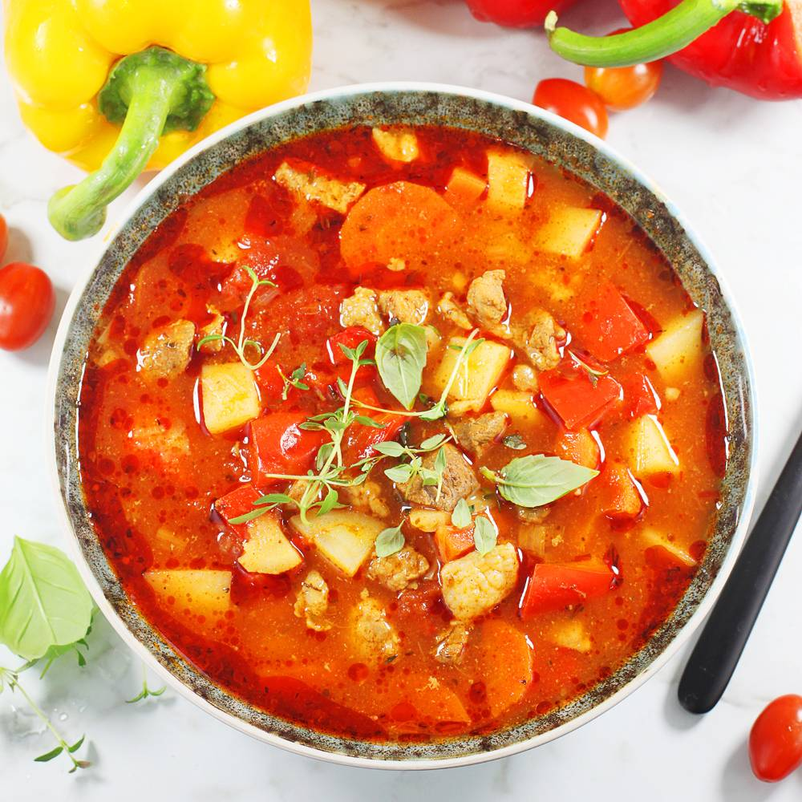

Zupa gulaszowa

Description
Zupa gulaszowa to jedna z lepszych zup. Jest sycąca, smaczna i rozgrzewająca. To jedno z dań, które nigdy mi się nie
nudzi.
Ingredients
- 500 g wieprzowiny np. łopatki, szynki, karczku, biodrówki..
- 500 g wołowy np. łopatka, udziec, zrazowa, karczek..
- 400 g ziemniaków - 3 średnie ziemniaki
- 100 g cebuli lub pora - 1 duża cebula
- 1 duża czerwona papryka
- 250 g marchwi - 2 średnie marchewki
- 400 g passaty lub puszka pomidorów
- 3 łyżki koncentratu pomidorowego
- 1250 ml wody lub dowolnego bulionu
- 3 łyżki oleju roślinnego do smażenia lub smalcu
- 3 łyżki oleju roślinnego do smażenia lub smalcu
Steps
- Zacznę od mięsa. Wiem, że wiele osób nie ma pewności jakie mięso najlepiej dać do gulaszu lub zupy gulaszowej. Z
wieprzowiny polecam na pierwszym miejscu łopatkę. Bardzo dobra jest też szynka oraz już trochę tłustszy karczek
i biodrówka. Ja daję pół na pół: 500 gramów wieprzowiny i 500 gramów wołowiny.
- Mięsa umyj w zlewie pod zimną, bieżącą wodą. Zlew umyj od razu. Mięsa osusz ręcznikiem papierowym i pokrój na
małe kawałki. Ja podsmażam mięso w garnku, w którym będę potem gotować zupę, ale możesz to zrobić również osobno
na dużej patelni. Nagrzej garnek lub patelnię i dodaj dwie łyżki oleju roślinnego do smażenia lub smalcu. Wyłóż
całe mięso i podsmażaj na dużej mocy palnika nie dłużej niż pięć minut. Mięso razem z całym sosem przełóż na
chwilę do drugiego naczynia (lub z patelni do garnka, w którym będzie się gotować zupa).
- W trakcie podsmażania mięsa lub też wcześniej, przygotuj sobie warzywa.Cebulę lub pora obierz i posiekaj. Do
garnka wlej łyżkę oleju lub smalcu i zacznij podsmażać cebulę/pora na średniej mocy palnika. Kolejno obierz i
pokrój na plasterki czosnek. Marchewki i pietruszkę obierz i również pokrój w plasterki i jeszcze na pół.
Paprykę oczyść z gniazda nasiennego i nasion i pokrój na kawałki. Polecam paprykę czerwoną, ale śmiało może być
też żółta lub pomarańczowa.
- Warzywa podsmażaj razem do dziesięciu minut. Dodaj całe mięso z sosem. Od razu wlej pięć szklanek wody lub dowolnego bulionu. Przy tak dużej ilości świetnych składników sama woda sprawdzi się bez problemu.
- Dodaj też przyprawy: łyżka słodkiej papryki, po łyżeczce soli, tymianku i oregano, po pół łyżeczki pieprzu i ostrej papryki. Całość zamieszaj. Garnek przykryj przykrywką i gotuj zupę na małej mocy palnika przez 90 minut.